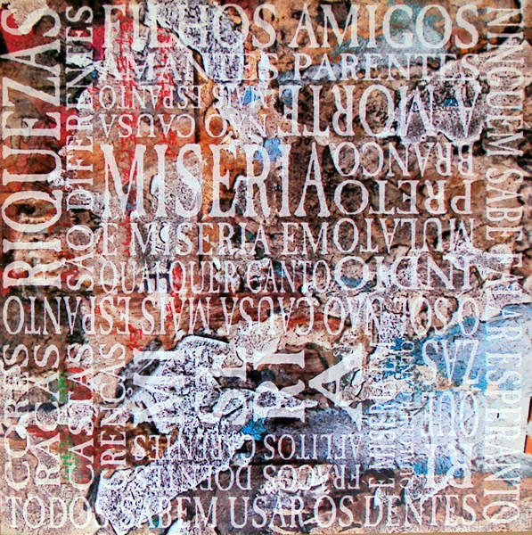
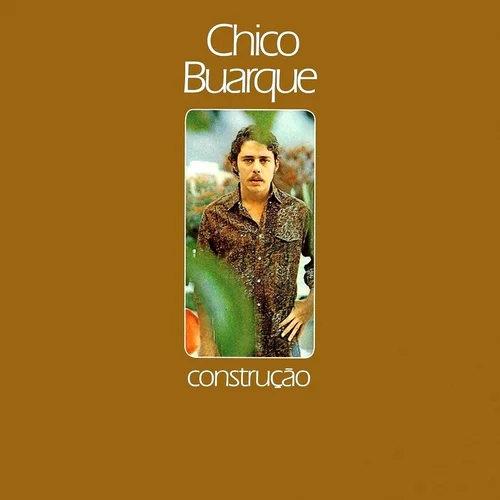
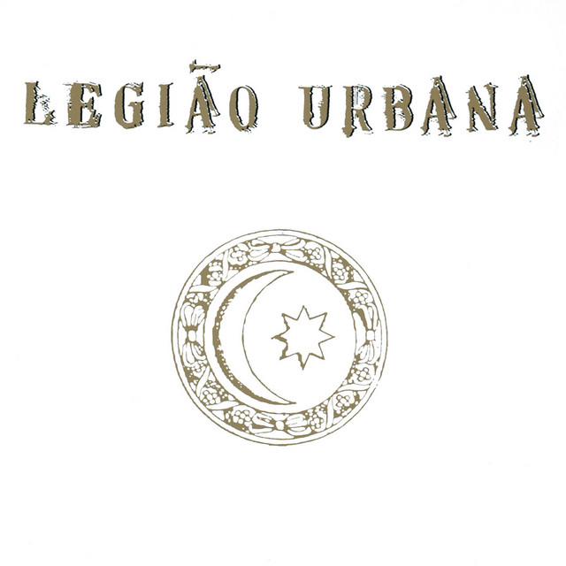
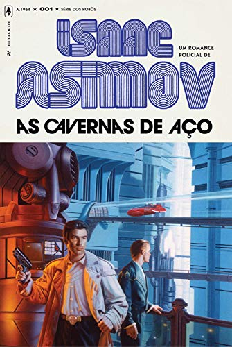
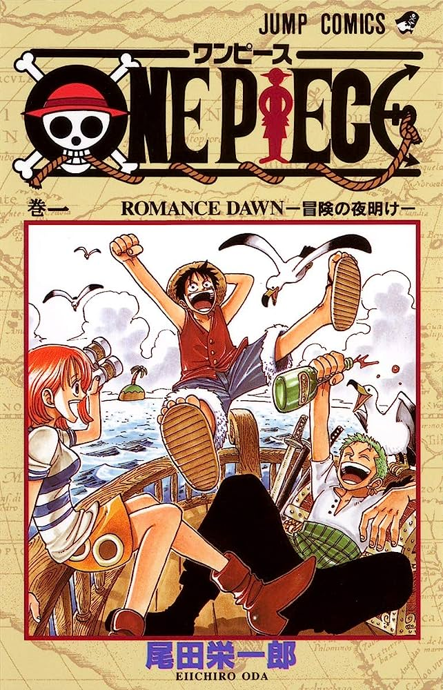
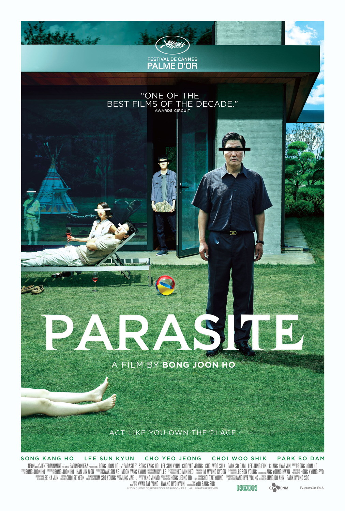

A seguir algumas obras que em dado momento do seu texto retratam a desigualdade social:

16 de outubro de 1989
Miséria, Titãs
Composta por Sérgio Britto e escrita por Arnaldo Antunes e Paulo Miklos, é a segunda faixa do disco "Õ Blesq Blom",
seguida pela introdução feita pelo casal de repentistas pernambucanos Mauro e Quitéria. A letra retrata
as desigualdades como algo crônico das diferentes sociedades ao redor do mundo, e como as classes baixas são vistas como meros
números perante a sociedade.

1 de Janeiro de 1971
Construção, Chico Buarque
Ultima faixa do lado A do disco de mesmo nome, a música se destaca pelo desenvolvimento do seu arranjo,
começando apenas com voz e violão, e, ao longo da faixa, sendo adicionado orquestração e tensão aos
acordes. Sua letra também é emblemática, com uma história sobre invisibilidade das classes baixas
perante a sociedade, ao mesmo tempo que a estrutura dos seus versos chama atenção por sempre terminar
em proparoxintonas, feito dificílimo que exalta as habilidades de Chico Buarque enquanto escritor.

15 de dezembro de 1991
Metal Contra As Nuvens, Legião Urbana
Com impressionantes 11 minutos de duração, a faixa mais longa do quinto disco -e de toda a discografia-
da banda Legião Urbana critica o governo brasileiro da época, comandado pelo ex-presidente Fernando Collor de Melo,
em uma época em que o país sofria de uma forte crise econômica e com o confisco de contas bancárias dos cidadãos,
enquanto se utiliza de metáforas dos tempos medivais, tema que permeia todo o disco, sendo também visto nas faixas
"Teatro dos Vampiros", "L'age D'or", e "O Mundo Anda Tão Complicado".

Outubro de 1953
Cavernas de Aço, Isaac Asimov
O primeiro capitulo da quadrilogia dos Robôs de Asimov nos situa em uma terra distópica, em que os humanos vivem
em gigantescos complexos de cidades cobertas por redomas de metal, chamados "cavernas de aço", enquanto uma raça
"evoluída", chamados spacers, vivem em outros planetas colonizados pelos humanos e com condições e qualidade de vida
superiores. No romance, acompanhamos o detetive Elijah e seu assistente robô Daneew em uma investigação do assassinato
de um spacer, enquanto lida com as questões morais das desigualdades entre humanos e spacers. Com tramas e reviravoltas
impressionantes, o livro é um dos mais pretigiados da bibligrafia de Asimov.
3 de abril de 1862
Os Miseráveis, Victor Hugo
Revolucionário na época em que foi lançado, o celebre romance de Victor Hugo se passa no início do século 19,
na França e conta a trajetória de Jean Valjean, um rapaz que é preso após roubar um pão para alimentar sua família.
Ao sair da prisão, passa a morar nas ruas, até que encontra um padre que o ajuda a reconstruir sua vida. A obra conta,
simultaneamente, a história de Fantine, uma mãe solteira que para sustentar sua filha Cosette, começa a se prostituir.

19 de julho de 1997
One Piece, Eichiro Oda
Notável pela sua duração e por sua fervorosa base de fãs, o prestigiado mangá de Eichiro Oda tem como a desigualdade social
parte fundamental de sua trama política, seja no arco do arquipélago de Sabaody, onde os Mugiwara se deparam com os Teriuubito,
supostos seres celestiais e descendentes dos criadores do mundo, que são tratados como deuses e escravizam e matam os humanos sem o minimo
remorso, seja no recente arco de Wano, em que o vilão Kaido, ao lado do tirano Kurosumi Orochi, comanda o país de Wano em uma ditadura,
implantando fabricas das frutas "SMILE", degradando a natureza e deixando o país em miséria e fome.

30 de maio de 2019
Parasita, Bong Joon-ho
Vencendor do Oscar de melhor filme em 2019, o filme retrata a falta de escrúpulos no desejo de ascender na sociedade. No longa de
Bong, todos os membros da família Ki-taek estão desempregados e vivem em condições miseráveis, até que um dos filhos consegue emprego
como professor de inglês da filhab de um casal milionário. Uma vez dentro da mansão, ele cria oportunidades e farsas para infiltrar
toda a família em diferentes serviços